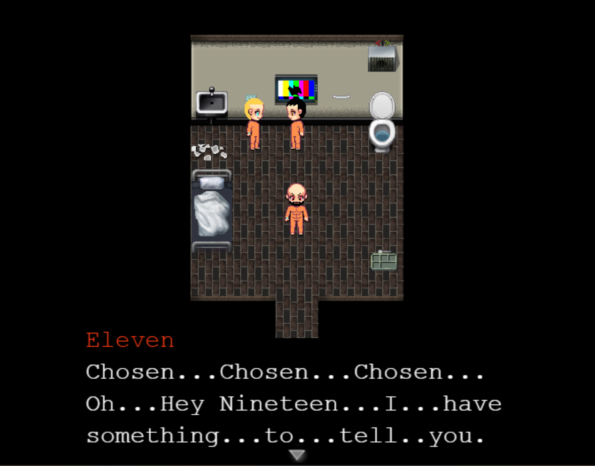

Vanish is a game that I thought I would be interested in. Before I even downloaded I had the impression that this would be a horror game where people mysteriously "vanish." And even the webpage was eerie and dark. But when I opened the game I was met with color and of an NPC telling me about a "Game" starting. I was slightly disappointed that the horror impression was gone but I kept playing. The storyline was okay. I wasn't really interested in the story much and I can guess the ending not even halfway through the game. I was mainly interested in exploring all the nooks and crevasses because there were some funny dialogues.
The game isn't finished so I don't know the true ending, but basically you are a guy who just wakes up onto a cot, not knowing who you are and where you are by a person who is called #11. #11 wakes you up saying that the next Game is about to start. They explain that if you don't play the Game then you have forfeited and therefore will "Vanish." So, you play the game without dying (aka Vanishing), and gain 1 point. You find out to get out of this prison, you must gain at least 5 points, but that's without your memories. But if you were to gain 10 points, then you can leave with all your memories.
The characters were alright, there were some loose ends to what happened to some of them but they were alright. You can tell that #11 was creepy and that he might be behind something. #3 was straightforward and just wanted to get out of there, and the Announcer didn't have much to say to me. The only thing the Waiter had to say was that I was smart for choosing the Blue Pill.

Now, I have some criticisms, there will be some locked rooms and when interacted with, the dialogue would tell me that we must find a way in there, but then later in the story, the same door was magically opened for me. There wasn't any puzzle for me to solve, and it would be like that for another locked door. There was also a note I found after completing a game that has missing letters and numbers underneath the empty spaces, so I assumed that there would be a secret code I had to solve. But there was nothing else in the game that gave me any of the missing code. And the last thing is there is a "Room of Fate" where you can exchange your points for freedom, well you can also exchange points for unlocking a laptop in the Lobby, I did that in one of my save files and, to be honest, I was quite disappointed. I was just given some vague test results and vague information of an NPC I haven't even met yet. It was bare and useless when trying to uncover the big mystery of this Prison. Overall, the game is simple, and you can't unlock anything until you progress into the story more. The game was alright but there is some room for improvement.